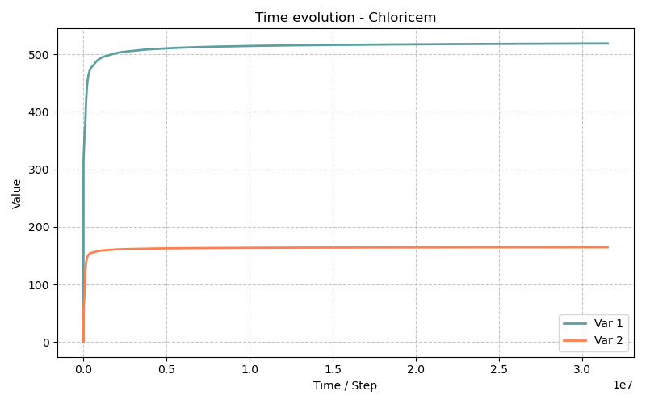

Modèle Chloricem — Durabilité des matériaux cimentaires : pénétration des chlorures (1D)
Fichiers sources :
src/Models/ModelFiles/Chloricem.cppExemple :
test_examples/Chloricem/Chloricem·test_examples/Chloricem/Chloricem.mshModèles dérivés : Carbocem · Carbochloricem
Auteurs du modèle Bil : P. Dangla et al. (Université Gustave Eiffel)
Table des matières
- Contexte et objectif
- Hypothèses
- Variables et notation
- Modèle mathématique
- 4.1 Équations de conservation
- 4.2 Lois de flux ionique
- 4.3 Chimie de la solution interstitielle
- 4.4 Phases solides : dissolution, précipitation, décalcification
- 4.5 Adsorption des chlorures par les C-S-H
- 4.6 Transport hydraulique — loi de Darcy
- 4.7 Perméabilité et tortuosité évolutives
- Conditions aux limites et initiales
- Explication détaillée des fichiers d'entrée
- 6.1 Fichier principal
Chloricem - 6.2 Courbe de saturation
sat - 6.3 Courbe de perméabilité relative
relpermCN - 6.4 Courbe de volume molaire des C-S-H
V_CSH - 6.5 Courbes d'adsorption des chlorures
Adscl - 6.6 Courbes d'adsorption Na/K —
Adsna,Adsk - 6.7 Fichier de maillage
Chloricem.msh - 6.8 Fichier alternatif
m42(modèle simplifié de référence) - Résultats attendus et interprétation physique
- Discrétisation numérique
- Références bibliographiques
1. Contexte et objectif
Le modèle Chloricem est un modèle de durabilité des bétons et matériaux cimentaires (CBM — Cementitious-Based Materials). Il couple le transport multi-ionique en phase liquide avec la chimie des phases solides du ciment hydraté (portlandite, C-S-H, calcite, sel de Friedel). C'est le modèle dit « mère » dont dérivent les modèles Carbocem (carbonatation seule) et Carbochloricem (carbonatation + chlorures).
Le scénario du cas test représente la pénétration des ions chlorure dans un béton ou une pâte de ciment saturée, exposée à une solution saline (eau de mer, saumure, sels de déverglaçage). Ce phénomène est l'une des principales causes de la corrosion des armatures dans les structures en béton armé : les chlorures dépassent un seuil critique à la surface des aciers et amorcent leur dépassivation.
Domaine : 1D planaire, \(L = 0.5\) dm = 5 cm.
| Paramètre | Valeur |
|---|---|
| Porosité initiale \(\phi_0\) | 12.1 % |
| Perméabilité intrinsèque \(k_l^\text{int}\) | \(1.4 \times 10^{-17}\) dm² |
| Teneur initiale en portlandite \(n_\text{CH}^0\) | 1.64 mol/dm³ |
| Teneur initiale en C-S-H \(n_\text{CSH}^0\) | 0.635 mol/dm³ |
| Durée de simulation | 1 an (\(3.1536 \times 10^7\) s) |
Le matériau est initialement sain (portlandite et C-S-H intacts, solution interstitielle alcaline, pas de chlorures). Le bord gauche (\(x = 0\)) est soumis à des conditions salines évoluant dans le temps (concentration en Cl⁻ croissante interpolée sur 24 h). Le bord droit (\(x = 0.5\) dm) est imperméable (Neumann nul sur toutes les espèces sauf \(p_l\) et \(z_\text{si}\) qui sont maintenus en Dirichlet).
2. Hypothèses
- Isotherme : \(T = 298\) K (25 °C). Les constantes d'équilibre, viscosités et diffusivités sont fixées à cette température.
- Milieu saturé (\(s_l = 1\), sans phase gazeuse active) : la courbe de saturation est constante égale à 1 pour la plage de pressions considérée. L'équation
E_AIR(air) est désactivée dans cette configuration. - Porosité évolutive : la dissolution de la portlandite et la précipitation du sel de Friedel modifient le volume solide, donc la porosité.
- Électroneutralité locale : une équation supplémentaire contraint la charge nette de la solution (via l'inconnue \(\log c_\text{OH}\)).
- Gaz parfaits pour le calcul des pressions partielles de vapeur et de CO₂ gazeux (utiles dans les modèles couplés dérivés).
- Loi de Darcy pour le transport advectif de masse totale (pression \(p_l\)).
- Loi de Nernst-Planck pour le transport ionique (diffusion + migration électrique).
- Équilibres thermodynamiques locaux pour la chimie de la solution, résolus par la bibliothèque
HardenedCementChemistry. - Cinétiques de précipitation pour la calcite et le sel de Friedel ; dissolution cinétique de la portlandite couverte d'une couche de calcite (modèle de Thiery).
3. Variables et notation
Inconnues primaires (8 dans le cas test Chloricem)
| Symbole Bil | Signification physique | Unité |
|---|---|---|
p_l |
Pression de la phase liquide | Pa |
z_ca |
Inconnue zêta calcique : \(z_\text{ca} = n_\text{CcH}/n_\text{ch}^0 + \log_{10} S_\text{CcH}\) | — |
z_si |
Inconnue zêta silicique : \(z_\text{si} = n_\text{Si,CSH}/n_\text{csh}^0 + \log_{10} S_\text{CSH}\) | — |
logc_na |
\(\log_{10}(c_\text{Na})\), Na total dissous | mol/dm³ |
logc_k |
\(\log_{10}(c_\text{K})\), K total dissous | mol/dm³ |
psi |
Potentiel électrique adimensionné \(\psi = F\varphi/(RT)\) | — |
logc_oh |
\(\log_{10}(c_\text{OH})\) (électroneutralité) | mol/dm³ |
logc_cl |
\(\log_{10}(c_\text{Cl})\), Cl⁻ total dissous | mol/dm³ |
Remarque sur les inconnues zêta : La variable \(z_\text{ca}\) encode simultanément la quantité de solide (CH + CC) et son état de saturation. Quand \(z_\text{ca} > 0\), le solide est présent et \(S_\text{CcH} = 1\) (équilibre) ; quand \(z_\text{ca} < 0\), le solide est épuisé et \(S_\text{CcH} = 10^{z_\text{ca}} < 1\) (sous-saturation). Le même principe s'applique à \(z_\text{si}\) pour les C-S-H.
Variables secondaires calculées
| Symbole | Signification |
|---|---|
| \(s_l\) | Degré de saturation en liquide |
| \(\phi\) | Porosité actuelle |
| \(n_\text{CH}\) | Teneur molaire en portlandite (mol/dm³) |
| \(n_\text{CSH}\) | Teneur molaire en C-S-H (mol/dm³) |
| \(n_\text{CC}\) | Teneur molaire en calcite (mol/dm³) |
| \(n_\text{FS}\) | Teneur molaire en sel de Friedel (mol/dm³) |
| \(x_\text{csh}\) | Rapport Ca/Si dans les C-S-H |
| \(c_\text{Cl}^\text{ads}\) | Chlorures adsorbés sur les C-S-H (mol/dm³) |
| \(\tau_l\) | Tortuosité effective pour le transport ionique |
| \(k_\text{perm}\) | Coefficient de perméabilité relatif à \(\phi_0\) |
Constantes thermodynamiques
| Symbole | Valeur | Signification |
|---|---|---|
| \(T\) | 298 K | Température |
| \(R\) | 8.314 J/(mol·K) | Constante des gaz parfaits |
| \(K_w\) | \(10^{-14}\) mol²/dm⁶ | Produit ionique de l'eau |
| \(\rho_l^0\) | 1 kg/dm³ | Masse volumique de l'eau |
| \(\mu_l\) | \(\approx 10^{-3}\) Pa·s | Viscosité dynamique de l'eau à 298 K |
4. Modèle mathématique
4.1 Équations de conservation
Le système résout 8 équations aux dérivées partielles couplées (dans la configuration Chloricem active) :
Conservation de la masse totale (eau) :
avec \(M_\text{tot} = \rho_l\,\phi\,s_l\) (masse d'eau liquide par unité de volume total, la vapeur étant négligeable en milieu saturé).
Conservation molaire du calcium :
Conservation molaire du silicium :
Conservation molaire du sodium :
Conservation molaire du potassium :
Conservation molaire du chlore :
Bilan de charge électrique (divergence du courant nul) :
Électroneutralité locale :
c'est-à-dire \(2c_{\text{Ca}^{2+}} + c_{\text{Na}^+} + c_{\text{K}^+} + c_{\text{H}^+} - c_{\text{OH}^-} - c_{\text{Cl}^-} - 2c_{\text{CO}_3^{2-}} - \ldots = 0\)
Cette relation, résolue dans HardenedCementChemistry, fournit \(c_\text{OH}\) (inconnue logc_oh).
4.2 Lois de flux ionique
Le flux molaire de chaque ion \(i\) dans la phase liquide est donné par l'équation de Nernst-Planck :
où :
- \(D_i^\text{eff}\) est le coefficient de diffusion effectif de l'ion \(i\) dans l'eau (calculé par CementSolutionDiffusion) ;
- \(z_i\) est le nombre de charge de l'ion ;
- \(\psi = F\varphi/(RT)\) est le potentiel électrique adimensionné ;
- \(\tau_l\) est la tortuosité de la phase liquide (voir §4.7) ;
- \(\mathbf{W}_l\) est le flux de masse liquide (Darcy, voir §4.6).
Le courant électrique \(\mathbf{W}_q\) est la somme pondérée par les charges :
La condition \(\nabla \cdot \mathbf{W}_q = 0\) (conservation de la charge) détermine le gradient de potentiel électrique \(\nabla\psi\) qui assure la neutralité locale du flux.
4.3 Chimie de la solution interstitielle
La chimie est résolue à chaque point d'intégration par la bibliothèque HardenedCementChemistry, qui calcule à l'équilibre thermodynamique l'ensemble des concentrations ioniques à partir des variables primaires. Les espèces aqueuses prises en compte comprennent notamment :
| Espèce | Commentaire |
|---|---|
| Ca²⁺, CaOH⁺, CaOH₂(aq) | Calcium |
| H₂SiO₄²⁻, H₃SiO₄⁻, H₄SiO₄ | Silicate |
| Na⁺, NaOH(aq) | Sodium |
| K⁺, KOH(aq) | Potassium |
| H⁺, OH⁻ | Eau |
| CO₃²⁻, HCO₃⁻, CO₂(aq) | Carbone |
| Cl⁻ | Chlorure |
La bibliothèque CementSolutionDiffusion fournit les coefficients de diffusion effectifs de chaque espèce en fonction de la composition de la solution et de la temperature.
4.4 Phases solides : dissolution, précipitation, décalcification
Portlandite Ca(OH)₂ — CH
La portlandite se dissout selon une cinétique contrôlée par la diffusion du CO₂ à travers une couche de calcite qui se forme en surface du cristal (modèle de Thiery, 2005). En absence de carbonatation (CO₂ = 0), CH est à l'équilibre :
Le contenu en CH est gouverné par l'inconnue \(z_\text{ca}\) :
C-S-H (Silicates de Calcium Hydratés)
Les C-S-H forment une solution solide de composition variable, caractérisée par le rapport Ca/Si = \(x_\text{csh}\). La décalcification progressive des C-S-H est modélisée par la diminution de \(x_\text{csh}\) lorsque la solution s'appauvrit en calcium. Le volume molaire des C-S-H varie linéairement avec \(x_\text{csh}\) (courbe V_CSH) :
avec \(x_0 = 0\), \(V_0 = 5.44 \times 10^{-2}\) dm³/mol (tobermorite) et \(x_1 = 0.85\), \(V_1 = 8.14 \times 10^{-2}\) dm³/mol.
Calcite CaCO₃ — CC
La précipitation/dissolution de la calcite suit une cinétique du premier ordre :
La calcite ne se forme que si la solution est sursaturée en CaCO₃ (\(S_\text{CC} > 1\)), ce qui requiert la présence de CO₂ dissous. Dans le cas test pur chlorure (pas de CO₂ externe), la calcite reste absente.
Sel de Friedel Ca₄Al₂O₆Cl₂·10H₂O
Le sel de Friedel est la phase solide qui fixe chimiquement les chlorures. Sa précipitation suit une cinétique analogue :
Le sel de Friedel contient 2 moles de Cl par mole, contribuant significativement à la fixation des chlorures dans le béton.
Porosité actuelle
La porosité évolue en fonction des volumes des phases solides :
4.5 Adsorption des chlorures par les C-S-H
Les C-S-H adsorbent physiquement les ions Cl⁻ selon une isotherme de Langmuir en fonction de la concentration en chlorures libres \(c_\text{Cl}\) et du rapport Ca/Si courant \(x_\text{csh}\) :
Les coefficients \(\alpha\) et \(\beta\) sont tabulés en fonction de \(x_\text{csh}\) dans la courbe Adscl. Dans le cas test :
Ces valeurs sont indépendantes de \(x_\text{csh}\) dans cet exemple (courbe constante sur \([0.5,\, 1.5]\)).
L'adsorption du sodium et du potassium est modélisée par une isotherme linéaire tronquée à \(c = 0.3\) mol/dm³ :
Dans le cas test, \(R_\text{Na} = R_\text{K} = 0\) (courbes Adsna, Adsk), donc les alcalins ne sont pas adsorbés.
4.6 Transport hydraulique — loi de Darcy
Le flux de masse totale d'eau liquide (en milieu saturé, sans gravité) est :
Le coefficient \(k_\text{perm}(\phi)\) modélise la réduction de perméabilité due au colmatage par les produits de réaction (voir §4.7). Dans le cas test saturé, \(k_{rl} = 1\).
4.7 Perméabilité et tortuosité évolutives
Tortuosité — modèle Oh & Jang (2004)
La tortuosité de la phase liquide pour le transport ionique est calculée selon le modèle empirique de Oh & Jang :
Ce modèle est calibré sur des données expérimentales de diffusivité de bétons et pâtes de ciment, et tient compte de l'effet conjoint de la porosité et de la saturation.
Perméabilité — modèle Verma & Pruess (1988)
La réduction de perméabilité liée au colmatage est modélisée par le modèle de Verma & Pruess :
où \(\phi_r = 0.70\,\phi_0\) est la porosité seuil en-dessous de laquelle la perméabilité s'annule, et le facteur de forme \(f_\text{pore}\) dépend de la fraction de longueur des corps de pores frac = 0.8.
5. Conditions aux limites et initiales
Conditions initiales
Le béton est initialement sain, en équilibre avec la solution interstitielle alcaline :
| Inconnue | Valeur initiale | Commentaire |
|---|---|---|
p_l |
0 Pa | Pression de référence |
logc_cl |
\(-4\) (soit \(10^{-4}\) mol/dm³) | Traces de chlorures |
z_ca |
1 | Portlandite présente (\(n_\text{CH} = n_\text{ch}^0\)) |
z_si |
\(-0.92\) | C-S-H présents à composition initiale |
logc_na |
\(-0.64\) (soit ≈ 0.23 mol/dm³) | Sodium initial |
logc_k |
\(-4\) (soit \(10^{-4}\) mol/dm³) | Potassium initial faible |
psi |
0 | Potentiel nul de référence |
Ces valeurs correspondent à une solution interstitielle fortement alcaline (pH ≈ 13.5, portlandite à l'équilibre) caractéristique d'un béton OPC hydraté.
Conditions aux limites
| Bord | \(x\) [dm] | Variable | Type | Valeur |
|---|---|---|---|---|
| Gauche (exposition) | 0 | logc_cl |
Dirichlet | \(-4\) à \(t=0\) → \(-0.28\) à \(t=86400\) s |
| Gauche | 0 | z_ca |
Dirichlet | \(1 \to -0.208\) (décalcification progressive) |
| Gauche | 0 | logc_na |
Dirichlet | \(-0.64 \to -2.49\) |
| Gauche | 0 | logc_k |
Dirichlet | \(-4\) (constant) |
| Gauche | 0 | psi |
Dirichlet | 0 |
| Droit (symétrie) | 0.5 | p_l |
Dirichlet | 0 Pa |
| Droit | 0.5 | z_si |
Dirichlet | \(-0.92\) (C-S-H imposés) |
Les conditions de bord gauche évoluent linéairement en temps entre \(t = 0\) et \(t = 86400\) s (1 jour), simulant l'établissement progressif d'un contact avec la solution saline. Au-delà d'un jour, les valeurs restent constantes (la fonction est interpolée avec les 2 points fournis, ce qui implique une extrapolation constante au-delà).
Interprétation physique : Le front de chlorures pénètre depuis le bord gauche (surface exposée à la mer ou à une solution saline) vers le bord droit (cœur du matériau, imperméable ou plan de symétrie). Sur 1 an, le front atteint quelques millimètres à quelques centimètres selon la diffusivité effective.
6. Explication détaillée des fichiers d'entrée
6.1 Fichier principal Chloricem
Système d'unités : Le modèle travaille en décimètres (longueur) et hectogrammes (masse). Toutes les entrées doivent être cohérentes avec ce système : - Les longueurs sont en dm (1 dm = 10 cm) - Les concentrations sont en mol/dm³ (= mol/L) - Les pressions en Pa - Le temps en secondes
Géométrie : Problème 1D planaire (axe \(x\), pas de symétrie cylindrique ni sphérique).
Maillage : Définit un domaine 1D de 0 à 0.5 dm avec 100 éléments de taille \(5 \times 10^{-3}\) dm = 0.5 mm. Le maillage génère 103 nœuds (incluant les nœuds de bord). Les 4 premières valeurs 4 0. 0. 0.5 0.5 définissent les coordonnées des coins du domaine ; le format est lu par Bil pour construire le maillage structuré.
Astuce : Le fichier
Chloricem.msh(format Gmsh v2.0) est la version exportée de ce maillage, utilisée si Bil est lancé avec un fichier.mshexterne plutôt que la génération interne.
Material
Model = Chloricem
InitialPorosity = 0.121
IntrinsicPermeability = 1.4e-17
InitialContent_portlandite = 1.64
InitialContent_csh = 0.635
InitialConcentration_sodium = -1
InitialConcentration_potassium = -1
FractionalLengthOfPoreBodies = 0.8
PorosityFractionAtVanishingPermeability = 0.70
MinimumPorosity = 0.01
PrecipitationRate_calcite = 1.e-6
PrecipitationRate_friedelsalt = 1.e-6
Curves = sat p_c = ... s_l = ...
Curves = relpermCN s_l = ... kl_r = ...
Curves = V_CSH x = ... v_csh = ...
Curves = Adscl x = ... alpha = ... beta = ...
Curves = Adsna x = ... adsna = ...
Curves = Adsk x = ... adsk = ...
Paramètres matériaux lus par la fonction ReadMatProp :
| Paramètre | Valeur | Signification |
|---|---|---|
InitialPorosity |
0.121 | \(\phi_0\) = 12.1 % |
IntrinsicPermeability |
\(1.4 \times 10^{-17}\) dm² | \(k_l^\text{int}\) (en dm², pas m²) |
InitialContent_portlandite |
1.64 mol/dm³ | \(n_\text{CH}^0\) |
InitialContent_csh |
0.635 mol/dm³ | \(n_\text{CSH}^0\) |
InitialConcentration_sodium |
\(-1\) | Valeur négative = calcul automatique via HardenedCementChemistry |
InitialConcentration_potassium |
\(-1\) | Idem |
FractionalLengthOfPoreBodies |
0.8 | Paramètre frac du modèle Verma-Pruess |
PorosityFractionAtVanishingPermeability |
0.70 | \(\phi_r/\phi_0\) : seuil de colmatage |
MinimumPorosity |
0.01 | \(\phi_\text{min}\) : plancher numérique de porosité |
PrecipitationRate_calcite |
\(10^{-6}\) mol/(dm³·s) | Taux cinétique calcite \(r_\text{CC}\) |
PrecipitationRate_friedelsalt |
\(10^{-6}\) mol/(dm³·s) | Taux cinétique sel de Friedel \(r_\text{FS}\) |
Champs spatiaux : Un seul champ uniforme de valeur 1, utilisé comme multiplicateur dans les conditions initiales et aux limites (facteur d'échelle neutre ici).
Initialization
7
Region = 2 Unknown = p_l Field = 0 Function = 0
Region = 2 Unknown = logc_cl Field = 1 Function = 1
Region = 2 Unknown = z_ca Field = 1 Function = 2
Region = 2 Unknown = z_si Field = 1 Function = 0
Region = 2 Unknown = logc_na Field = 1 Function = 3
Region = 2 Unknown = logc_k Field = 1 Function = 4
Region = 2 Unknown = psi Field = 0 Function = 0
Initialisation : Les 7 inconnues sont initialisées dans la région 2 (tout le domaine volumique). La syntaxe Field = i Function = j signifie que la valeur initiale est Field[i] × Function[j](t=0) :
| Inconnue | Field | Function | Valeur initiale | Interprétation |
|---|---|---|---|---|
p_l |
0 (=0) | 0 (=0) | 0 Pa | Pression de référence |
logc_cl |
1 (=1) | 1 : F(0)=−4 | −4 | \(c_\text{Cl} = 10^{-4}\) mol/dm³ |
z_ca |
1 (=1) | 2 : F(0)=1 | 1 | Portlandite intacte |
z_si |
1 (=1) | 0 (=0) | 0 | Attention : Z_si=0 signifie \(n_\text{CSH} = n_\text{csh}^0\), \(S_\text{CSH}=1\) |
logc_na |
1 (=1) | 3 : F(0)=−0.639 | −0.639 | \(c_\text{Na} \approx 0.23\) mol/dm³ |
logc_k |
1 (=1) | 4 : F(0)=−4 | −4 | \(c_\text{K} = 10^{-4}\) mol/dm³ |
psi |
0 (=0) | 0 (=0) | 0 | Potentiel nul |
Functions
5
N = 2 F(0) = -4 F(86400) = -0.28133
N = 2 F(0) = 1 F(86400) = -2.7766
N = 2 F(0) = -0.92082 F(86400) = -0.20761
N = 2 F(0) = -0.63927 F(86400) = -2.4948
N = 1 F(0) = -4
Fonctions temporelles : 5 fonctions linéaires par morceaux utilisées pour les conditions initiales et aux limites :
| Fonction | \(t=0\) | \(t=86400\) s (1 j) | Usage |
|---|---|---|---|
| 1 | \(-4\) | \(-0.281\) | logc_cl : de \(10^{-4}\) mol/dm³ à \(0.52\) mol/dm³ |
| 2 | \(1\) | \(-2.777\) | z_ca : dissolution progressive de la portlandite (décalcification) |
| 3 | \(-0.921\) | \(-0.208\) | z_si : décalcification des C-S-H |
| 4 | \(-0.639\) | \(-2.495\) | logc_na : dilution du sodium par l'eau de mer |
| 5 | \(-4\) | (1 point) | logc_k : constant |
Ces valeurs correspondent à des conditions à la frontière gauche représentant le contact avec une eau de mer (environ 0.5 mol/dm³ de NaCl, pH neutre à légèrement basique, calcium dilué).
Boundary Conditions
7
Region = 2 Unknown = p_l Field = 0 Function = 0
Region = 1 Unknown = logc_cl Field = 1 Function = 1
Region = 1 Unknown = z_ca Field = 1 Function = 2
Region = 1 Unknown = logc_na Field = 1 Function = 3
Region = 1 Unknown = logc_k Field = 1 Function = 4
Region = 1 Unknown = psi Field = 0 Function = 0
Region = 2 Unknown = z_si Field = 1 Function = 0
Conditions aux limites :
- Région 1 (bord gauche, \(x = 0\)) : conditions de Dirichlet sur les espèces ioniques. Ces valeurs évoluent dans le temps via les fonctions 1–4.
- Région 2 (bord droit, \(x = 0.5\) dm) : Dirichlet sur
p_l(pression de référence) etz_si(C-S-H en état initial, cœur du matériau). logc_ohn'est pas listé car il est déterminé implicitement par l'équation d'électroneutralité.
La condition
psi = 0au bord d'exposition fixe la référence du potentiel électrique.
Dates
13
0. 2.628e6 5.256e6 7.884e6 1.0512e7 1.314e7 1.5768e7 1.8396e7 2.1024e7 2.3652e7 2.628e7 2.8908e7 3.1536e7
Pas de sortie : 13 instants de sortie régulièrement espacés d'environ 1 mois (\(\approx 2.628 \times 10^6\) s), couvrant 1 an. Chaque instant génère un fichier Chloricem.tN.
Objective Variations
logc_cl = 1.e-1
p_l = 1.e5
z_ca = 1.
z_si = 1.
logc_na = 1.
logc_k = 1.
psi = 1.e3
logc_oh = 1.e-2
Variations objectives (contrôle adaptatif du pas de temps) : Ces valeurs définissent la variation maximale autorisée de chaque inconnue par pas de temps. Si une inconnue varie plus que sa valeur objective, le pas de temps est réduit. logc_oh = 1e-2 est la contrainte la plus stricte car le pH est très sensible.
Processus itératif Newton-Raphson : Maximum 20 itérations Newton, tolérance \(10^{-6}\) sur le résidu, 2 tentatives de répétition en cas d'échec de convergence (avec réduction du pas de temps).
Pas de temps : Départ très petit (0.1 s) pour les fortes discontinuités initiales des conditions aux limites, puis croissance adaptative jusqu'à \(10^6\) s ≈ 11.6 jours.
6.2 Courbe de saturation sat
Le milieu est considéré entièrement saturé (\(s_l = 1\)) quelle que soit la pression capillaire. Cette simplification est valide pour un béton immergé ou en contact permanent avec une eau libre. La courbe est définie par 2 points avec \(s_l = 1\) constant.
6.3 Courbe de perméabilité relative relpermCN
Perméabilité relative liquide calculée par le modèle de Mualem-van Genuchten avec le paramètre de forme \(m = 0.45\) :
En milieu saturé (\(s_l = 1\)), \(k_{rl} = 1\). Cette courbe est définie sur 101 points de \(s_l = 0\) à \(s_l = 1\).
6.4 Courbe de volume molaire des C-S-H V_CSH
Curves = V_CSH x = Range{x1 = 0, x2 = 0.85, n=2}
v_csh = Expressions(1){x0=0 ; v0=5.44e-2 ; x1=0.85 ; v1=8.14e-2 ;
v_csh = (x1-x)/(x1-x0)*v0 + (x-x0)/(x1-x0)*v1}
Interpolation linéaire du volume molaire des C-S-H en fonction du rapport Ca/Si \(x\) :
| \(x\) (Ca/Si) | \(V_\text{CSH}\) [dm³/mol] | Phase |
|---|---|---|
| 0 | 0.0544 | Tobermorite (C-S-H riche Si) |
| 0.85 | 0.0814 | C-S-H typique de l'OPC |
Ce volume entre directement dans le calcul de la porosité actuelle \(\phi\).
6.5 Courbes d'adsorption des chlorures Adscl
Curves = Adscl x = Range{x1 = 0.5, x2 = 1.5, n = 100}
alpha = Expressions(1){alpha = 3.192 ;}
beta = Expressions(1){beta = 26.6 ;}
Isotherme de Langmuir pour l'adsorption des chlorures. Les coefficients sont constants sur \(x_\text{csh} \in [0.5,\, 1.5]\) :
La capacité d'adsorption maximale (plateau de Langmuir) est \(\alpha/\beta = 3.192/26.6 \approx 0.12\) mol Cl/mol CSH.
6.6 Courbes d'adsorption Na/K — Adsna, Adsk
Curves = Adsna x = Range{x1 = 0, x2 = 1, n = 2} adsna = Expressions(1){adsna = 0;}
Curves = Adsk x = Range{x1 = 0, x2 = 1, n = 2} adsk = Expressions(1){adsk = 0;}
Adsorption nulle pour Na et K dans ce cas test. Ces courbes sont requises par le modèle mais ici inactives.
6.7 Fichier de maillage Chloricem.msh
Fichier au format Gmsh v2.0 généré automatiquement. Il contient : - 103 nœuds sur le segment \([0,\, 0.5]\) dm ; - 102 éléments linéiques (LINE2) intérieurs ; - 2 éléments ponctuels (POINT) aux extrémités (régions 1 et 2, correspondant aux nœuds de bord gauche et droit).
Les régions physiques 1 (bord gauche) et 2 (bord droit / domaine volumique) sont utilisées pour affecter les conditions aux limites.
6.8 Fichier alternatif m42 (modèle simplifié de référence)
Le fichier m42 utilise le modèle de référence 42 (un modèle de transport de chlorures simplifié, purement diffusif) sur un domaine plus court (\(L = 0.05\) dm = 5 mm). Il constitue une solution de référence pour valider le comportement de Chloricem : les deux modèles doivent produire des profils de chlorures cohérents dans la limite des simplifications.
Le modèle 42 utilise 8 inconnues algébriquement différentes (c_cl, z_caoh2, z_c3a, z_sf, c_na, c_k, z_aloh3, psi) et des paramètres matériaux directement en unités SI (pas dm/hg) : D_Cl = 2.032e-13 m²/s.
7. Résultats attendus et interprétation physique
Évolution initiale (état \(t=0\))
À \(t = 0\), le matériau est uniforme et sain :
| Variable | Valeur uniforme |
|---|---|
| \(p_l\) | 0 Pa |
| \(s_l\) | 1.0 |
| \(\phi\) | 12.1 % |
| \(c_\text{Cl}\) | \(10^{-4}\) mol/dm³ (traces) |
| \(n_\text{CH}\) | 1.64 mol/dm³ |
| \(n_\text{CSH}\) | 0.635 mol/dm³ |
| \(x_\text{CSH}\) (Ca/Si) | 1.79 |
| pH | ≈ 13.5 (très alcalin) |
| \(c_\text{Ca,l}\) | ≈ 5.8×10⁻⁴ mol/dm³ |
Évolution sur 1 an (\(t = 3.1536 \times 10^7\) s)
L'analyse des fichiers de sortie Chloricem.t12 au nœud \(x = 0\) (bord exposé) révèle après 1 an :
| Variable | \(t=0\) | \(t=1\) an (bord) | Évolution |
|---|---|---|---|
| \(n_\text{CH}\) | 1.64 mol/dm³ | ≈ 0 mol/dm³ | Portlandite totalement dissoute en surface |
| \(n_\text{CSH}\) | 0.635 mol/dm³ | ≈ 0.0017 mol/dm³ | C-S-H quasi épuisés en surface |
| \(n_\text{CC}\) | 0 | ≈ 0 | Pas de calcite (pas de CO₂) |
| \(c_\text{Cl}\) | \(10^{-4}\) | ≈ 0.52 mol/dm³ | Front de chlorures établi en surface |
| pH | 13.5 | ≈ 9.6 | Dépassivation (pH < 11.5) |
| \(\phi\) | 12.1 % | ≈ 17.5 % | Augmentation (dissolution sans reprécipitation) |
Physique du front de pénétration
-
Front de chlorures : les ions Cl⁻ pénètrent depuis le bord gauche par diffusion (principale) et migration (secondaire). Le profil est de type erfc (fonction d'erreur complémentaire) pour un coefficient de diffusion constant.
-
Dépassivation des armatures : le critère usuel de dépassivation est atteint lorsque la teneur en chlorures libres dépasse \(0.4\ \text{kg/m³}\) de béton, soit environ 0.01 mol/dm³. Sur 1 an dans cette configuration, ce seuil est atteint sur les premiers millimètres.
-
Dissolution de la portlandite : la baisse de pH induite par la dilution du bord entraîne la dissolution de CH, libérant du Ca²⁺ qui tamponne partiellement la solution.
-
Fixation par adsorption et sel de Friedel : une fraction des chlorures est piégée sous forme adsorbée sur les C-S-H et précipitée en sel de Friedel. Cette fixation retarde l'avancée du front de chlorures libres.
-
Évolution de la porosité : la dissolution de CH et des C-S-H sans reprécipitation crée une zone dégradée de porosité accrue en surface, accélérant progressivement le transport.

8. Discrétisation numérique
Le modèle est discrétisé par la méthode des volumes finis centrés sur les cellules (FVM), implémentée dans Bil via FVM.h. La discrétisation spatiale utilise un schéma centré pour les flux diffusifs et le flux électrique.
Le système non-linéaire (8 équations couplées × 103 nœuds = 824 degrés de liberté) est résolu à chaque pas de temps par la méthode de Newton-Raphson, avec une matrice Jacobienne assemblée par SetTangentMatrix().
Le pas de temps adaptatif est contrôlé par la variation maximale des inconnues (OBJE dans Bil) : le pas est réduit si une inconnue varie plus que sa valeur objective, et augmenté sinon, jusqu'au maximum Dtmax = 1e6 s.
La chimie interne (résolution des équilibres thermodynamiques et des saturations des phases solides) est effectuée à chaque point d'intégration par la bibliothèque HardenedCementChemistry, via la méthode Integrate() du MaterialPointMethod.
9. Références bibliographiques
Modèles de transport ionique en milieu poreux
-
Nernst, W. (1888). Zur Kinetik der in Lösung befindlichen Körper. Zeitschrift für Physikalische Chemie, 2, 613–637. — Équation de Nernst-Planck pour la diffusion ionique couplée à la migration électrique.
-
Planck, M. (1890). Ueber die Potentialdifferenz zwischen zwei verdünnten Lösungen binärer Elektrolyte. Annalen der Physik, 276(8), 561–576. — Formalisme de Nernst-Planck.
-
Samson, E. & Marchand, J. (1999). Numerical solution of the extended Nernst-Planck model. Journal of Colloid and Interface Science, 215(1), 1–8. — Implémentation numérique du transport multi-ionique dans les bétons.
Durabilité des bétons — Pénétration des chlorures
-
Tuutti, K. (1982). Corrosion of Steel in Concrete. Swedish Cement and Concrete Research Institute, Stockholm. — Modèle classique de durée de vie en deux phases : initiation + propagation de la corrosion.
-
Andrade, C., Alonso, C. & Molina, F.J. (1993). Cover cracking as a function of bar corrosion: Part I — Experimental test. Materials and Structures, 26(8), 453–464. — Critères de dépassivation des armatures.
-
Tang, L. & Nilsson, L.O. (1992). Rapid determination of the chloride diffusivity in concrete by applying an electric field. ACI Materials Journal, 89(1), 49–53. — Méthode RCPT et coefficients de diffusion des chlorures.
Chimie du ciment hydraté
-
Taylor, H.F.W. (1997). Cement Chemistry (2ᵉ éd.). Thomas Telford, London. — Référence fondamentale sur la composition et la chimie des hydrates du ciment.
-
Lothenbach, B. & Winnefeld, F. (2006). Thermodynamic modelling of the hydration of Portland cement. Cement and Concrete Research, 36(2), 209–226. — Modélisation thermodynamique des phases solides du ciment hydraté.
Adsorption des chlorures par les C-S-H
-
Barbarulo, R., Marchand, J., Snyder, K.A. & Prené, S. (2000). Dimensional analysis of ionic transport problems in hydrated cement systems. Cement and Concrete Research, 30(12), 1955–1960. — Modélisation de la fixation des chlorures.
-
Zibara, H., Hooton, R.D., Thomas, M.D.A. & Stanish, K. (2008). Influence of the C/S and C/A ratios of hydration products on the chloride ion binding capacity of lime-SF and lime-MK mixtures. Cement and Concrete Research, 38(3), 422–426. — Dépendance de l'adsorption des chlorures en fonction de la composition des C-S-H.
Sel de Friedel
- Birnin-Yauri, U.A. & Glasser, F.P. (1998). Friedel's salt, Ca₂Al(OH)₆(Cl,OH)·2H₂O: its solid solutions and their role in chloride binding. Cement and Concrete Research, 28(12), 1713–1723. — Propriétés thermodynamiques du sel de Friedel.
Tortuosité et diffusivité effectives
-
Oh, B.H. & Jang, S.Y. (2004). Prediction of diffusivity of concrete based on simple analytic equations. Cement and Concrete Research, 34(3), 463–480. — Modèle de tortuosité Oh-Jang pour les bétons.
-
Millington, R.J. & Quirk, J.P. (1961). Permeability of porous solids. Transactions of the Faraday Society, 57, 1200–1207. — Modèle de tortuosité classique.
Perméabilité et colmatage
- Verma, A. & Pruess, K. (1988). Thermohydrological conditions and silica redistribution near high-level nuclear wastes emplaced in saturated geological formations. Journal of Geophysical Research, 93(B2), 1159–1173. — Modèle de réduction de perméabilité par précipitation.
Dissolution de la portlandite et cinétiques
-
Thiery, M. (2005). Modélisation de la carbonatation atmosphérique des matériaux cimentaires. Thèse de Doctorat, École Nationale des Ponts et Chaussées, Paris. — Cinétique de dissolution de la portlandite couverte de calcite ; paramètres \(a_2\), \(c_2\), \(D\).
-
Dangla, P., Thiery, M. & Villain, G. (2004). Modélisation couplée des transferts et des réactions chimiques dans les matériaux cimentaires exposés à la carbonatation atmosphérique. Revue Française de Génie Civil, 8(5), 571–589. — Cadre théorique du modèle Carbocem/Chloricem.
Implémentation numérique
- Dangla, P. — Bil : a FEM/FVM platform for multiphysics simulations. Université Gustave Eiffel. Code source : https://github.com/Universite-Gustave-Eiffel/bil